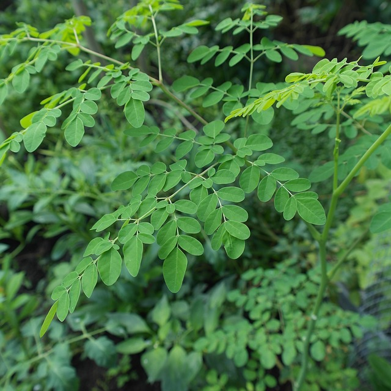
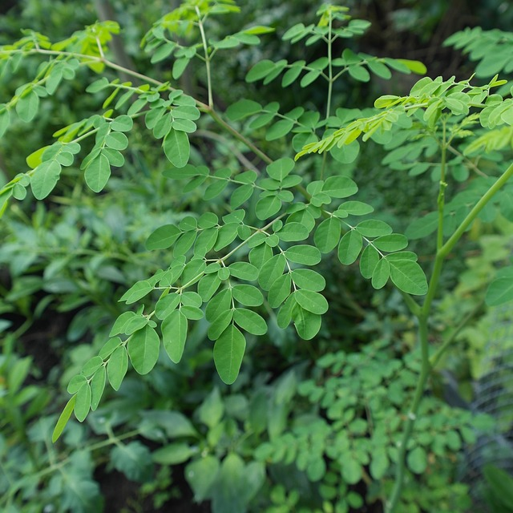
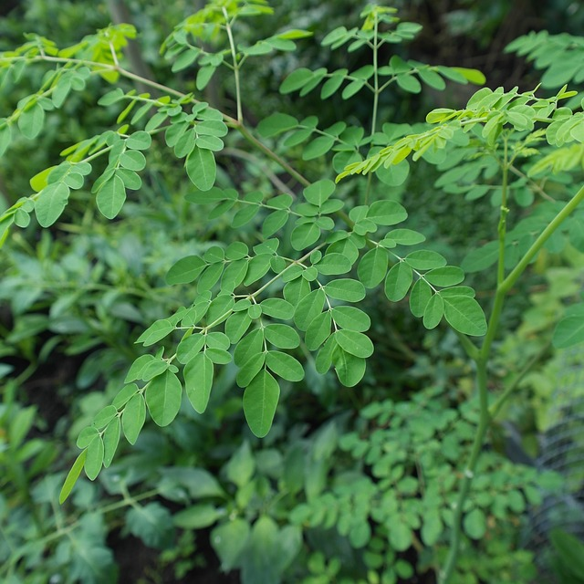

Click here to see an this majestic creature.

Amaizing right? They look so beautiful.
In botany, a tree is a perennial plant with an elongated stem, or trunk blah blah... yeah sure. We all know what a tree is. But do we know how important they are? Trees come from seeds and are planted and got through a process of germintation by the help of certain factors such as light and moisture to emerge from their shell as it were.
I want to bring your attention to this tree
This sexy looking tree is called the Moringa tree. What's so great about it you ask? Well let me educate you.
Moringa is a Himalayan tree famed for the nutritional value if it's leaves, so much that it has been nicknamed, 'the miracle tree'
According to a report published in the Asian Pacific Journal of Cancer Prevention, it contains a mix of essential amino acids (the building blocks of proteins), carotenoid phytonutrients (the same kinds found in plants like carrots and tomatoes), antioxidants, such as quercetin, and natural antibacterial compounds that work in the same way as many anti-inflammatory drugs.
Due to its anti-inflammatory properties, moringa has been used in ancient systems of medicine, such as Ayurveda, to prevent or treat stomach ulcers, liver disease, kidney damage, fungal or yeast infections (such as candida), digestive complaints, and infections. A common use of moringa oil is helping to boost liver function, therefore detoxifying the body of harmful substances, such as heavy metal toxins. It might also be capable of helping fight kidney stones, urinary tract infections, constipation, fluid retention/edema and diarrhea.
A study that appeared in the International Journal of Food Science Technology found that this plant had positive effects on blood sugar control and insulin levels in patients with diabetes when eaten as part of a high-carbohydrate meal. Separate studies have demonstrated that antidiabetic activities of low doses of moringa seed powder (50–100 milligrams per kilogram body weight) help increase antioxidant status and enzyme production within the liver, pancreas and kidneys of rats and prevent damage compared to control groups. High levels of immunoglobulin (IgA, IgG), fasting blood sugar and glycosylated hemoglobin (HbA1c) — three markers seen in diabetics — were also found to decrease as a result of moringa given to rats with diabetes.
So it's a pretty useful tree, without a doubt.
Trees are an important source of firewood for home or industrial use, timber for building purposes and as we have seem, some are used as medicine. So we have established that we indeed do need trees, the only problem is the rate at which we are cutting them down versus the rate of which we are replacing them is not substancial.
Cut one tree and plant two more in it's place. But planting the trees alone is not enough. Like a relationship, trees need to be nurtured and taken care of to ensure they reach maturity or at least a point where they can comfortably survive without much hassle.

Plant as many trees as the number of your age. Sounds ambitious right? Of course it is. We need such ambitious projects adopted by every person. Imagine if everyone were to commit to planting as many trees as the age they were. Even if you don't reach the expected number, you will definitely plant more than two trees. Which is still better than nothing.

Elephants!! One of the big 5. I just love looking at these Majestic creatures. Climate change is affecting even them though. Unpredictable rainy seasons means these creatures have to travel great distances to get water which may have dried up because of the rising global temperatures. Imagine that, you have walked for a week to get water at this place you know of. On arrival, you find out the oasis, for example, has dried up. Since you're still thirsty, you still need to be on the move. What a hassle this is.
So we all know that trees help combat climate change right? Now let us all make commitment to do something about it. It is the same same us that will have to save our planet.